close all
clear
l1 = .3301;
l2 = .3429;
filelist=dir('*.csv');
for filenow=1:length(filelist)
data=load(filelist(filenow).name);
thetaElb = data(:,2);
thetaSh = data(:,1);
time = data(:,4);
xHand = l1 * cosd(thetaSh) + l2 * cosd((180-thetaElb)+thetaSh);
yHand = l1 * sind(thetaSh) + l2 * sind((180-thetaElb)+thetaSh);
figure(filenow);
subplot(3,1,1);
plot(time,thetaElb);
title(strcat("Elbow Degrees vs Time - file",filelist(filenow).name))
xlabel('Time (ms)')
ylabel('Degrees')
subplot(3,1,2);
plot(time,thetaSh);
title(strcat("Shoulder Degrees vs Time - file",filelist(filenow).name))
xlabel('Time (ms)')
ylabel('Degrees')
subplot(3,1,3);
plot(xHand,yHand);
strcat("Recreation of drawing from data - file",filelist(filenow).name)
xlabel('Postion (m)')
ylabel('Postion (m)')
end
ans =
"Recreation of drawing from data - filefastS60E135T1.csv"
ans =
"Recreation of drawing from data - filefastS60E135T2.csv"
ans =
"Recreation of drawing from data - filefastS60E135T3.csv"
ans =
"Recreation of drawing from data - filefastS60E90T1.csv"
ans =
"Recreation of drawing from data - filefastS60E90T2.csv"
ans =
"Recreation of drawing from data - filefastS60E90T3.csv"
ans =
"Recreation of drawing from data - filemedS60E135T1.csv"
ans =
"Recreation of drawing from data - filemedS60E135T2.csv"
ans =
"Recreation of drawing from data - filemedS60E135T3.csv"
ans =
"Recreation of drawing from data - filemedS60E90T1.csv"
ans =
"Recreation of drawing from data - filemedS60E90T2.csv"
ans =
"Recreation of drawing from data - filemedS60E90T3.csv"
ans =
"Recreation of drawing from data - fileslowS60E135T1.csv"
ans =
"Recreation of drawing from data - fileslowS60E135T2.csv"
ans =
"Recreation of drawing from data - fileslowS60E135T3.csv"
ans =
"Recreation of drawing from data - fileslowS60E90T1.csv"
ans =
"Recreation of drawing from data - fileslowS60E90T2.csv"
ans =
"Recreation of drawing from data - fileslowS60E90T3.csv"
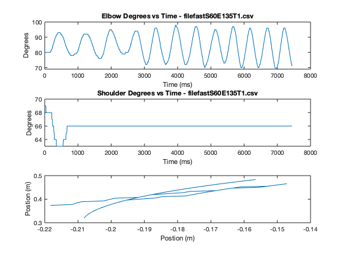 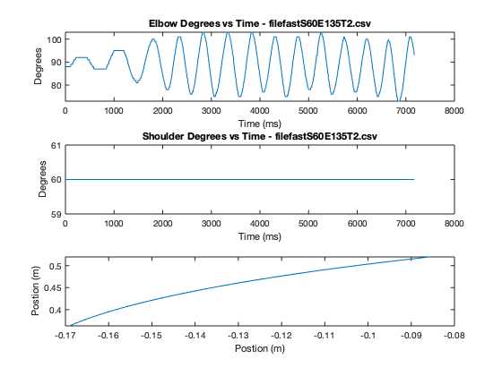 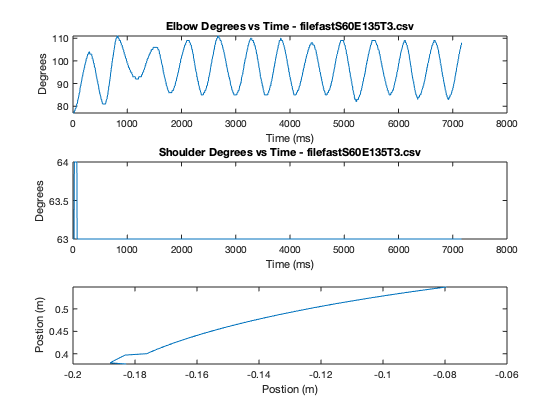 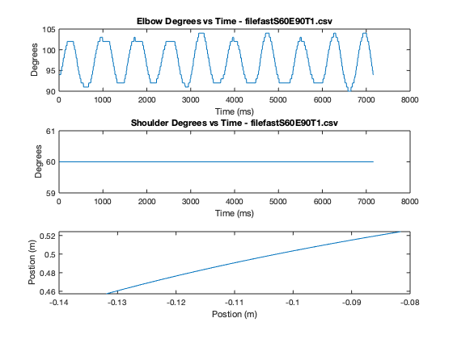 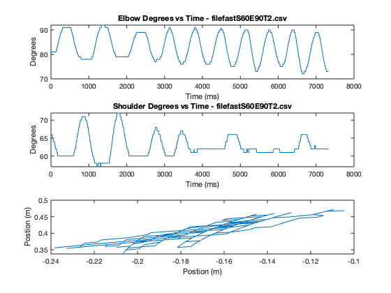 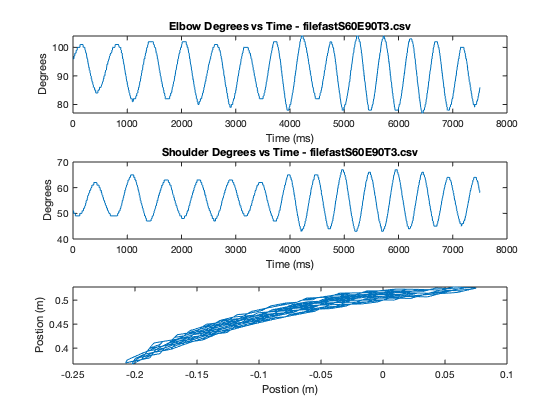 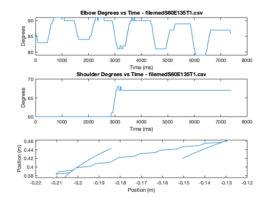 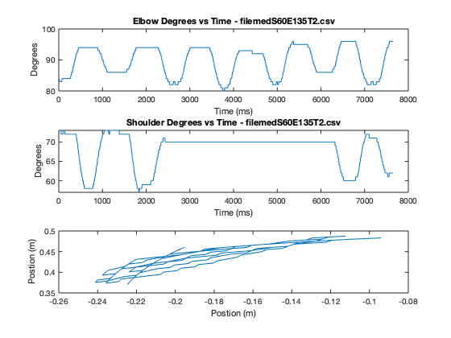 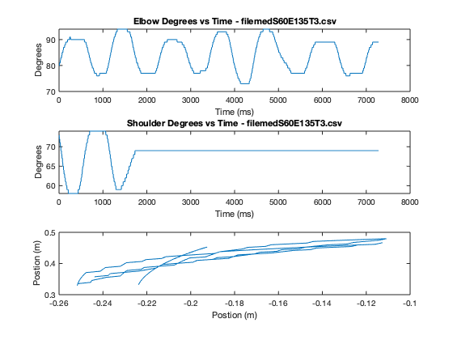 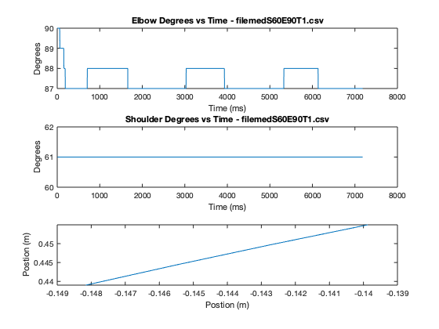 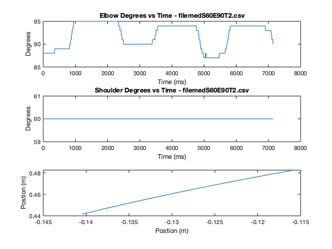 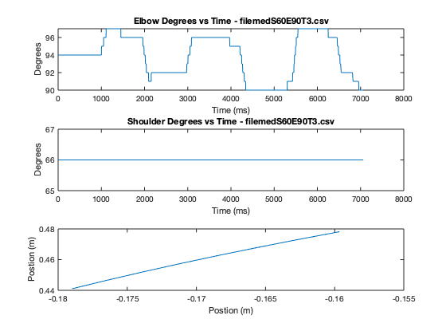 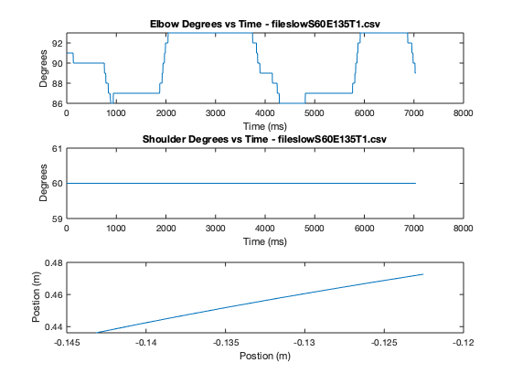 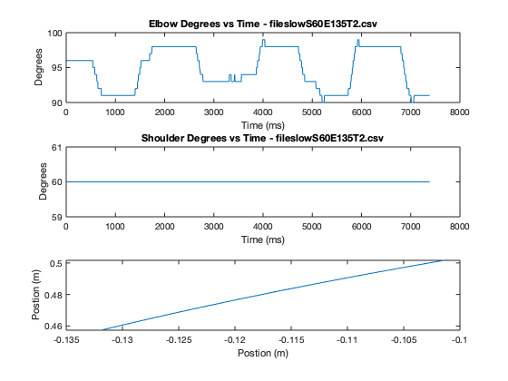 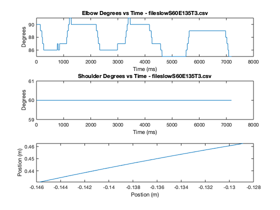 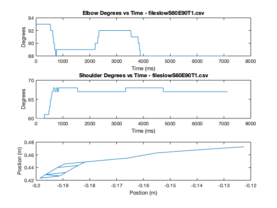 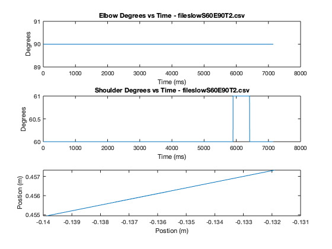 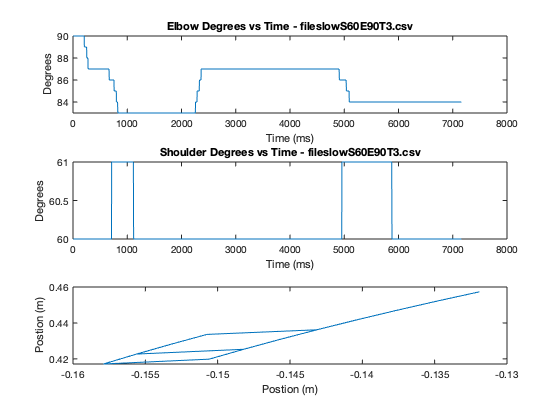